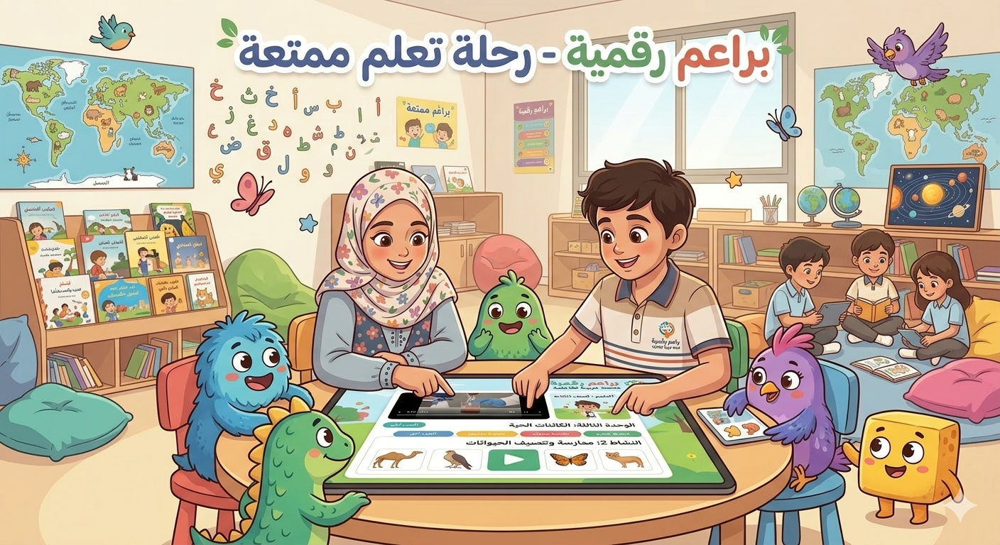

لوحة تقدم الطالبرحلتي
الحل لمشاكلك هنا
واجهة مطورة
حوّل دراستك إلى مغامرة رقمية!
براعم رقمية منصة عربية تفاعلية تحول أنشطة المنهج إلى تجارب تعلم ممتعة للأطفال من الصف الأول إلى السادس، وتمنح المعلم أنشطة جاهزة، وتوفر لولي الأمر صورة أوضح عن تقدم الطفل.
بدل عرض المحتوى كنصوص طويلة، صارت الرحلة أوضح: يختار الطفل الصف، يفهم المفهوم بصريًا، يطبق عبر نشاط أو لعبة، ثم يرى نتيجة وتقدمًا قابلًا للمتابعة.
6صفوف دراسية
29تجربة تعليمية
تقدمك
0%
جاري تحميل التقدم الفعلي من قاعدة البيانات...

المشكلة التي نحلها
التعلم النظري وحده لا يكفي لبناء فهم رقمي ممتع وواضح
كثير من الأطفال يتلقون المفاهيم الرقمية بصورة نظرية أو مجزأة، بينما يحتاج المعلم وولي الأمر إلى أدوات عربية تفاعلية تربط المفهوم بالتطبيق وتعرض رحلة التعلم بصورة أبسط وأكثر إقناعًا.
ما الذي يقدمه المشروع؟
قيمة واضحة لكل طرف في التجربة التعليمية
كيف تعمل المنصة؟
رحلة بسيطة في أربع خطوات مرئية
المسار الصفي
واجهة صفوف مطورة على شكل بطاقات مختصرة وواضحة
تم تحديث عرض الصفوف ليشبه المخطط البصري: تقسيم مرحلي، بطاقات تعلم/تطبيق/إنجاز، وانتقال أسرع إلى الصف المناسب.
مهمة اليوم
نشاط قصير جاهز للبدء
اختر صفك، أنجز نشاطًا واحدًا، ثم شاهد التقدم يظهر في لوحة المتابعة.
لماذا براعم رقمية مختلفة؟
ثلاث مزايا تجعل المنصة أقرب إلى منتج تعليمي حقيقي
لوحات المتابعة
نماذج تعرض التقدم بطريقة تقنع اللجنة بإمكانية التوسع
لوحة المعلممتابعة الصف
ملخص ولي الأمرأثر أسبوعي
الأثر المتوقع
كيف سنقيس النجاح باحتراف؟
01
نسبة إكمال الأنشطة داخل كل صف.
02
تحسن انتقال الطفل من المفهوم إلى التطبيق.
03
عدد الأنشطة التي ينفذها المعلم فعليًا داخل الصف.
04
مستوى تفاعل ولي الأمر مع الملخص الأسبوعي.
قابلية التوسع
لماذا هذا المشروع قابل للنمو؟
البنية الصفية جاهزة، والمحتوى قابل للتكرار، ويمكن إضافة تقارير وتخصيص وحسابات مستخدمين لاحقًا دون تغيير الفكرة الأساسية. بهذه الصياغة يظهر المشروع كمنتج قابل للتوسع لا مجرد عرض محتوى.
هيكل صفي جاهز
لوحات متابعة
قياس أثر
تتبع تقدم